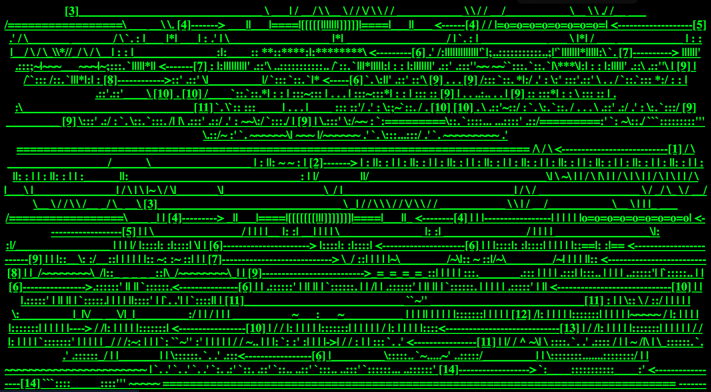

Select Early Web Art Artists:
| Web Artist | Characteristics | Thumbnail image |
|---|---|---|
| JODI | Graphically chaotic, unpredictable navigation, abstract imagery Source: Professor Splan |
 Source: wwwwwwwww.jodi.org |
| Gruppo A12 | Organized, colorful, and very simplistic |  Source: Rhizome Artbase |
| Alexei Shulgin | Like stone slabs, informational, and formal |  Source: Rhizome Artbase |
| Reynald Drouhin | Almost forensic, black and white, simple but very detailed |  Source: Rhizome Artbase |
| Stefano Marotta & Roberto Russo | Colored like a negative image, video game aesthetic, very dream like. |  Source: Rhizome Artbase |
| The Folk Songs Project | Directional, geometric, Map/street view art style |  Source: Rhizome Artbase |
Characteristics of Early Web Art:
- Interactivity & Participation
- Early internet art required the viewer to become a participant, often transforming passive browsing into active engagement. Works were rarely static; they were designed to be clicked, manipulated, or altered by the user, making the audience a part of the creative process.
- Immateriality & Virtual Existence
- Unlike traditional art, early internet art often existed only in the digital realm, defying physicality and traditional gallery structures. It lived as code on servers, HTML, and browser windows, emphasizing a "non-object" or ephemeral quality.
- Networkability & Connectivity
- The art was often distributed and social, relying on email lists, web browsers, and hyperlinks to create a "networked" experience. This enabled global reach and fostered collaboration, as seen in projects shared across distributed, international communities.
- Use of "Web 1.0" Aesthetics & Code
- Artists often used the raw tools of the early internet—basic HTML code, browser frames, glitch aesthetics, and early graphic user interfaces—as their medium. Examples include the chaotic, anti-aesthetic, and deconstructive work of collective JODI, which treated code and error messages as art.
- Subversion of Institutions & Commercialism
- Early internet art often held a "utopian," democratic ethos, aiming to bypass traditional art galleries, museums, and market structures. It was often created by enthusiasts and artists operating outside conventional commercial art systems.